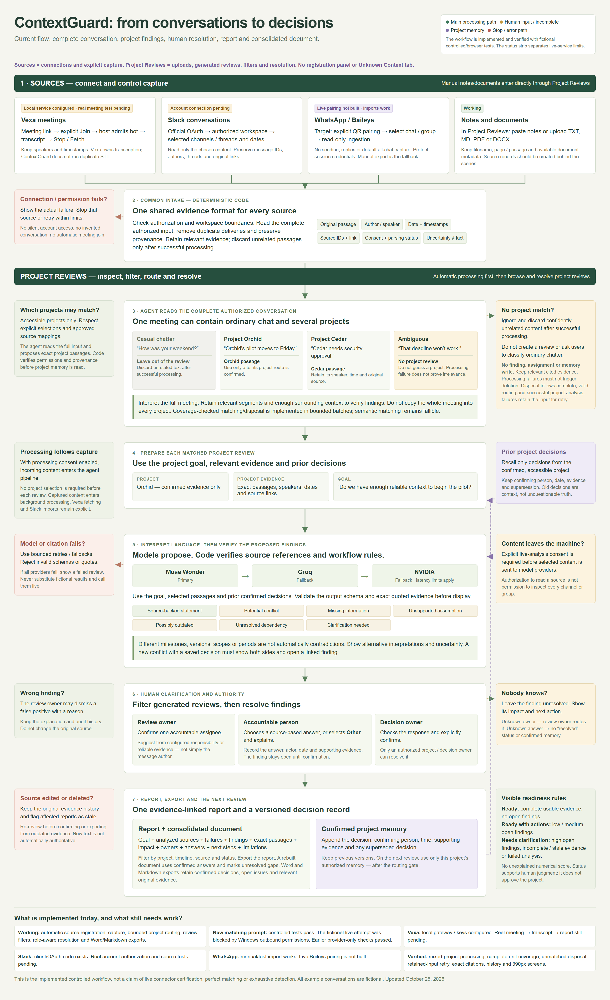

Create and select projects above the Project Reviews cards. Descriptions and goals guide matching.
ContextGuard implementation map
Authorized context becomes project reviews, confirmed decisions and traceable documents.
Upload files, paste notes or import an authorized conversation. Source IDs are created internally.
Read every input unit. Validate coverage, scope, mappings and permission before project memory.
Analyze retained project evidence and confirmed decisions. Verify exact citations. Filter saved reviews.
Review owner assigns; accountable member answers; authorized decision owner confirms.
Keep versioned decisions and relevant evidence. Clear unmatched input only after success. Export report or Word/Markdown context.
Code map
| Boundary | Implementation |
|---|---|
| Capture, connection controls and review filters | app/intake_api.py; web/workspace.js; web/app.js; web/processing.js |
| Coverage, routing, disposal and retry | app/intake.py; app/contracts.py |
| Permissions and persistence | app/service.py; app/storage.py |
| Providers, citations and human decisions | app/providers.py; app/review.py |
| Source adapters | app/adapters.py |
| Report and consolidated documents | app/exports.py; web/views.js |
Verified boundaries
Latest processing/network checks: 42 targeted Python tests, six UI tests and four isolated browser journeys passed. The preceding UI pass also completed 12 existing browser journeys. These are separate suites with fictional providers. The current UI has no registration panel or Unknown Context tab.
The latest six-document live attempt failed at 0/82 passages due to Windows outbound restrictions; an earlier attempt failed citation validation. Start normally from File Explorer and retry retained input. Processing now shows real stages and a fresh clock for each retry. Real Vexa meeting and Slack account tests remain pending. Experimental WhatsApp pairing and selected-text ingestion are implemented, but real phone pairing is unverified; manual import remains available. Semantic matching is fallible. Automated verification does not complete the learner's hands-on review.
Current guide · VerificationComplete data flow
